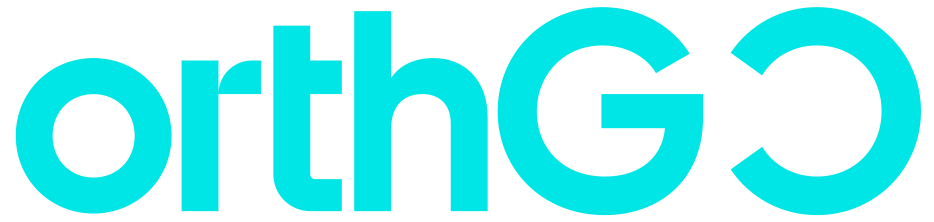

貨運物流
Freight Logistics
- 海運整櫃 FCL 與併櫃 LCL
- 空運
- 陸運與合作車隊
- 報關與稅則分類

1988台北創立，總部仍在民生東路
7 個辦公室台北、台中、高雄、東京、大阪、胡志明市、洛杉磯
IATA · ISO 45001 · AEO現有官網頁尾標示的會員與認證標誌
四條服務線沿用官網公開範圍。這裡寫的是實際作業，不是重複的口號。
Freight Logistics
Project Logistics
Warehouse Logistics
Shipping Agency
貨運、專案、倉儲或船務代理，先對上面的範圍。
填起運地、目的地、貨物與希望時程。
台北總部 +886-2-2531-8677，或寫信到 info@northgo.com。